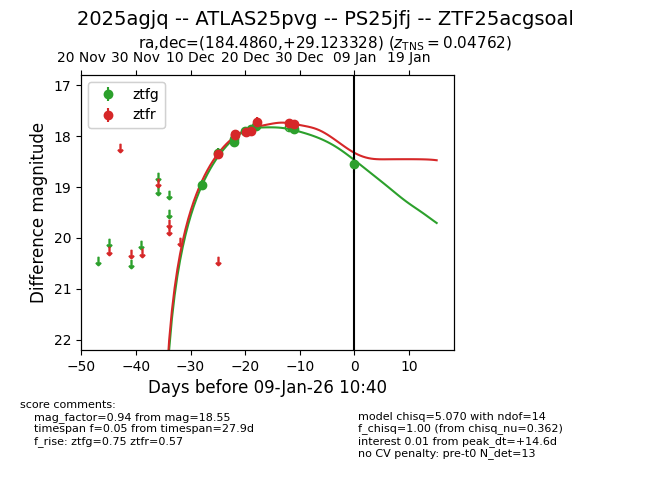
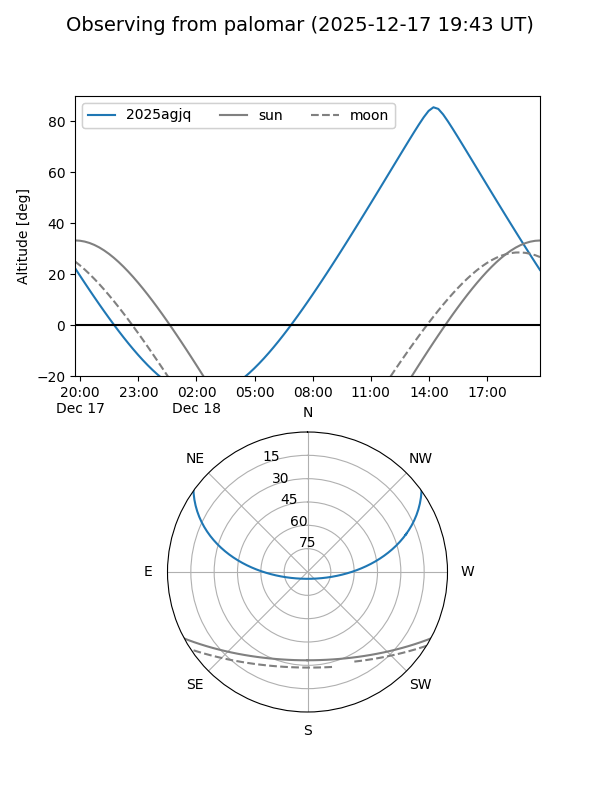
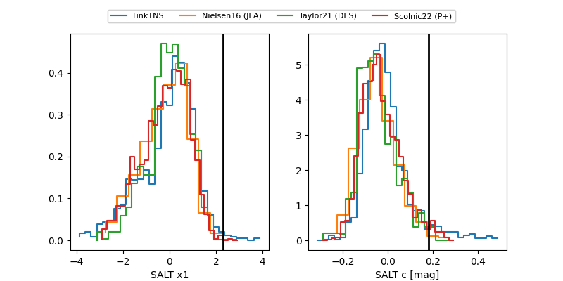

2025agjq
Target 2025agjq at 2025-12-21 14:17
Aliases and brokers:
FINK: fink-portal.org/ZTF25acgsoal
Lasair: lasair-ztf.lsst.ac.uk/objects/ZTF25acgsoal
ALeRCE: alerce.online/object/ZTF25acgsoal
TNS: wis-tns.org/object/2025agjq
YSE: ziggy.ucolick.org/yse/transient_detail/2025agjq
alt names
ZTF25acgsoal (ztf,fink_ztf)
2025agjq (tns,yse)
Coordinates:
equatorial (ra, dec) = 184.4860,+29.12333
equatorial (HMS+DMS) = 12:17:56.63,+29:07:23.98
galactic (l, b) = (195.8634,+82.35260)
Flags:
Photometry:
last atlaso=18.19, ztfg=17.86, ztfr=17.89
1 atlaso, 6 ztfg, 5 ztfr detections
Lightcurve

Visibility


Additional plots
